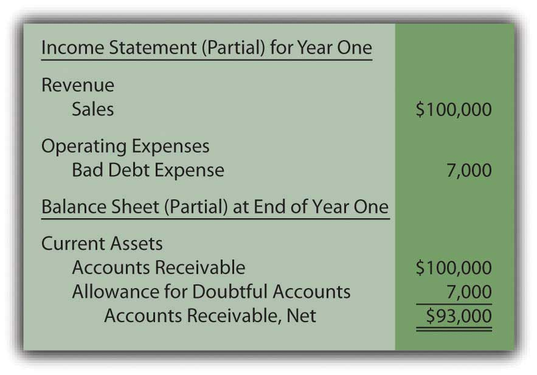

At the end of this section, students should be able to meet the following objectives:
Question: Based on the information provided by Dell Inc., companies seem to maintain two separate ledger accounts in order to report accounts receivables on their balance sheet at net realizable value. One is the sum of all accounts outstanding and the other is an estimation of the amount within that total which will never be collected. Interestingly, the first is a fact and the second is an opinion. The two are then combined to arrive at the net realizable value figure that is shown within the financial statements. Is the amount reported for accounts receivable actually the net of the total due from customers less the anticipated amount of doubtful accounts?
Answer: Yes, companies maintain two separate T-accounts for accounts receivables but that is solely because of the uncertainty involved. If the balance to be collected was known, one account would suffice for reporting purposes. However, that level of certainty is rarely possible.
Whenever a balance sheet is to be produced, these two accounts are netted to arrive at net realizable value, the figure to be reported for this asset.
The allowance for doubtful accounts is an example of a “contra accountOffset to an account that reduces the total balance to a net amount; in this chapter, the allowance for doubtful accounts always reduces accounts receivable to the amount expected to be collected.,” one that always appears with another account but as a direct reduction to lower the reported value. Here, the allowance serves to decrease the receivable balance to its estimated net realizable value. As a contra asset account, debit and credit rules are applied that are the opposite of the normal asset rules. Thus, the allowance increases with a credit (creating a decrease in the net receivable balance) and decreases with a debit. The more accounts receivable a company expects to be bad, the larger the allowance. This increase, in turn, reduces the net realizable value shown on the balance sheet.
By establishing two T-accounts, a company such as Dell can manage a total of $4.843 billion in accounts receivables while setting up a separate allowance balance of $112 million. As a result, the reported figure—as required by U.S. GAAP—is the estimated net realizable value of $4.731 billion.
Question: Accounts receivable and the offsetting allowance for doubtful accounts are netted with the resulting figure reported on the balance sheet.Some companies include both accounts on the balance sheet to explain the origin of the reported balance. Others show only the single net figure with additional information provided in the notes to the financial statements.How does the existence of doubtful accounts affect the income statement? Sales are made but a portion of the resulting receivables must be reduced because collection is rarely expected to be 100 percent. Does an increase in this allowance create an expense for the reporting company?
Answer: Previously, an expense was defined as a measure of the outflow or reduction of net assets caused by the reporting company’s attempt to generate revenues. If receivables are recorded that will eventually have to be removed because they cannot be collected, an expense occurs. In financial reporting, terms such as “bad debt expenseEstimated expense from making credit sales to customers who will never pay; because of the matching principle, recorded in the same period as the sales revenue.,” “doubtful accounts expense,” or “the provision for uncollectible accounts” are often encountered.
The inherent uncertainty as to the amount of cash that will actually be received affects the physical recording process. To illustrate, assume that a company makes sales on account to one hundred different customers late in Year One for $1,000 each. The earning process is substantially complete at the time of sale and the amount of cash to be received can be reasonably estimated. According to the revenue realization principle found within accrual accounting, the company should immediately recognize the $100,000 revenue generated by these transactions.Because the focus of the discussion here is on accounts receivable and their collectability, the recognition of cost of goods sold as well as the possible return of any merchandise will be omitted. Those topics are discussed in detail in later chapters.
Figure 7.1 Journal Entry—Year One—Sales Made on Credit
Assume further that the company’s past history and other relevant information indicate to officials that approximately 7 percent of all credit sales will prove to be uncollectible. An expense of $7,000 (7 percent of $100,000) is anticipated because only $93,000 in cash is expected from these receivables rather than the full $100,000.
The specific identity and the actual amount of these bad accounts will probably not be known for several months. No physical evidence exists at the time of sale to indicate which will become worthless (buyers rarely make a purchase and then immediately declare bankruptcy or leave town). For convenience, accountants wait until financial statements are to be produced before making their estimation of net realizable value. The necessary reduction is then recorded by means of an adjusting entry.
Question: This company holds $100,000 in accounts receivable but only expects to collect $93,000 based on the available evidence. The $7,000 reduction in the asset is an expense. When should the expense be recognized? These sales were made in Year One but the identity of the specific customers who fail to pay and the exact amounts to be removed will not be determined until Year Two. Should bad debt expense be recognized in the same year as the sales by relying on an estimate or delayed until the actual results are eventually finalized?
Answer: This situation illustrates how accrual accounting plays such a key role within U.S. GAAP. As discussed previously, the timing of expense recognition according to accrual accounting is based on the matching principle. Where possible, expenses are recorded in the same period as the revenues they helped generate. That guidance is clear. Thus, every company should handle uncollectible accounts in the same manner. The expected expense is the result of making sales to customers who ultimately will never pay. Because the revenue was reported at the time of sale in Year One, the related expense must also be recognized in that year. This handling is appropriate according to accrual accounting even though the $7,000 is only an estimated figure.
Based on U.S. GAAP, when the company produces financial statements at the end of Year One, an adjusting entry is made to (1) reduce the receivables balance to its net realizable value and (2) recognize an expense in the same period as the related revenue.
Figure 7.2 Adjusting Entry—End of Year One—Recognition of Bad Debt Expense for the Period
After this entry is made and posted to the ledger, the Year One financial statements contain the following information based on the adjusted T-account balances (assuming for convenience that no other sales were made on credit during the year):
Figure 7.3 Year One—Financial Statements
From this information, anyone studying these financial statements for Year One should understand that an expense estimated at $7,000 was incurred this year because the company made sales that will never be collected. In addition, year-end accounts receivable total $100,000 but have an anticipated net realizable value of only $93,000. Neither the $7,000 nor the $93,000 figure is expected to be exact but the eventual amounts should not be materially different. This basic portrait provides decision makers with fairly presented information about the accounts receivables held by the reporting company.
Link to multiple-choice question for practice purposes: http://www.quia.com/quiz/2092899.html
Question: When financial statements are prepared, an expense must be recognized and the receivable balance reduced to net realizable value. However, in the above adjusting entry, why was the accounts receivable account not directly decreased by $7,000 to the anticipated balance of $93,000? This approach is simpler as well as easier to understand. Why was the $7,000 added to an allowance account? In reporting receivables, why go to the trouble of setting up a separate allowance?
Answer: When the company prepares this adjustment at the end of Year One, it does not yet know which accounts will fail to be collected. Officials are only guessing that $7,000 will prove worthless. Plus, on the date of the balance sheet, the company actually does hold $100,000 in accounts receivable. That figure cannot be reduced directly until the specific identity of the accounts to be written off has been determined. Utilizing a separate allowance allows the company to communicate the expected amount of cash while still maintaining a record of all balances in the accounts receivable T-account.
Sales and the ultimate decision that specific accounts receivable will never be collected can happen months apart. During the interim, bad debts are estimated and recorded on the income statement as an expense and on the balance sheet through an allowance account, a contra asset. In that way, the receivable balance is shown at net realizable value while expenses are recognized in the same period as the sale to correspond with the matching principle. When financial statements are prepared, an estimation of the uncollectible amounts is made and an adjusting entry recorded. Thus, the expense, the allowance account, and the accounts receivable are all presented properly according to U.S. GAAP.